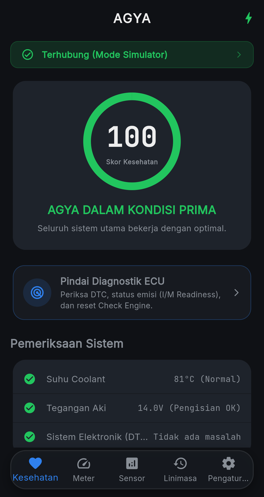
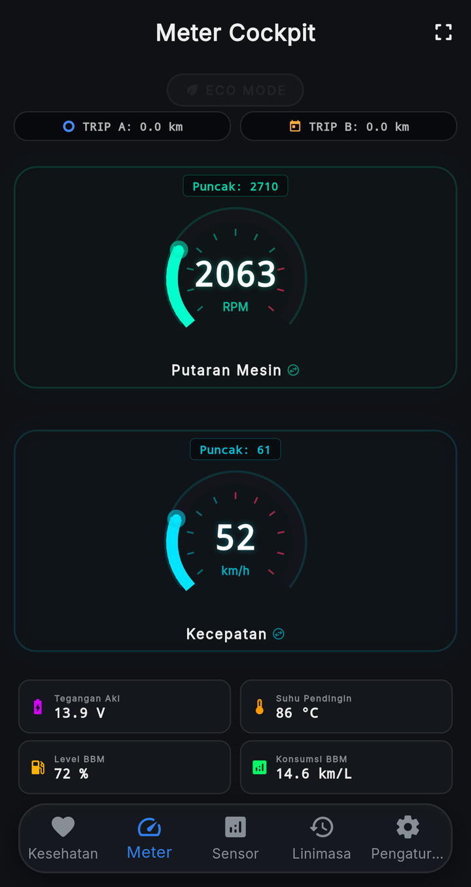
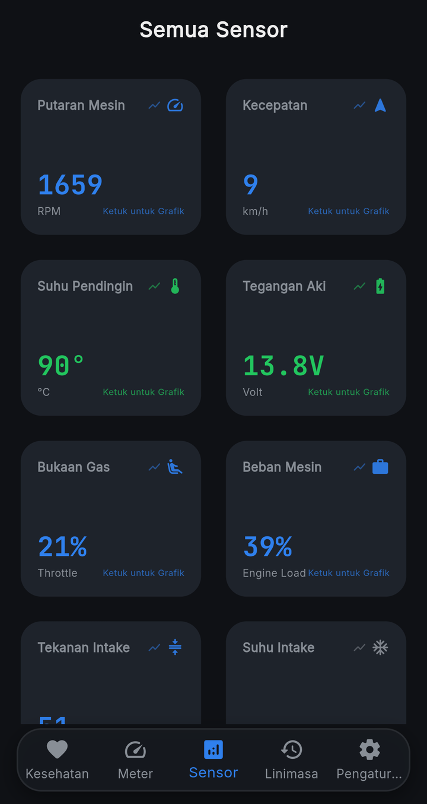
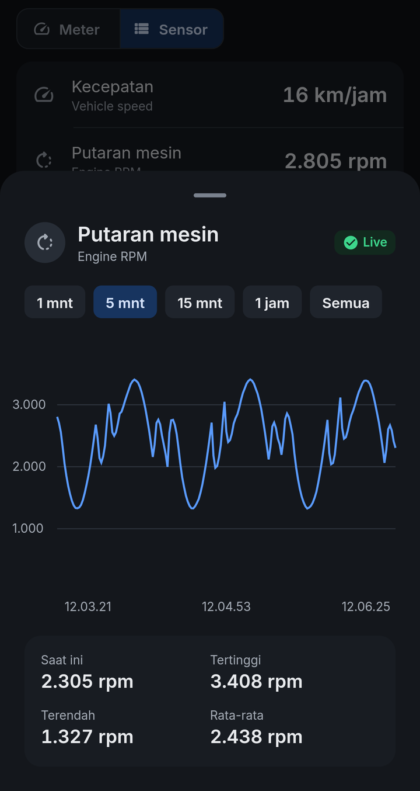
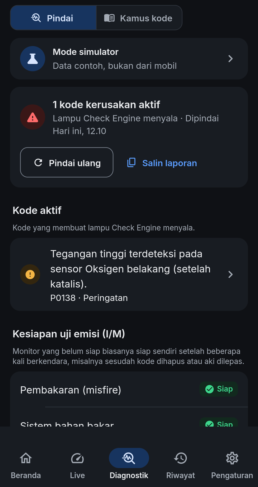
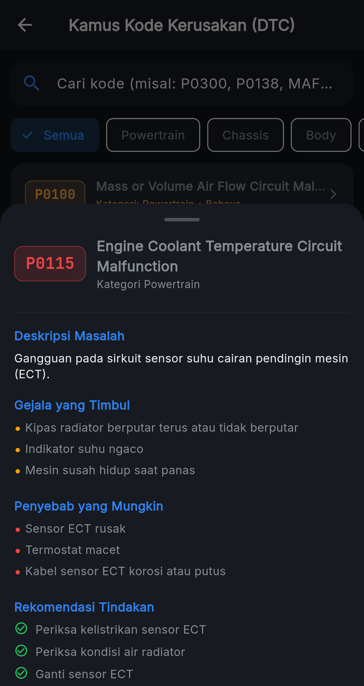
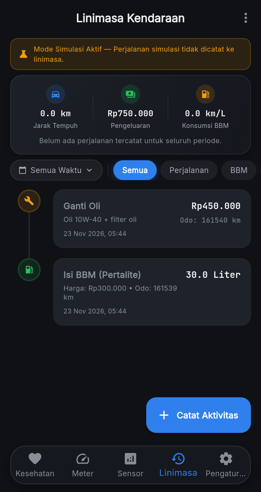
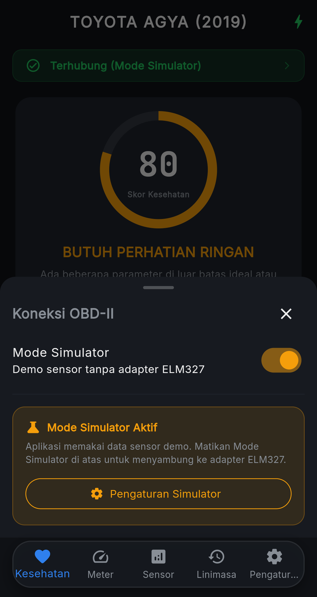

AutoCare mengubah adapter OBD Bluetooth (ELM327) menjadi monitor kesehatan mobil. Lihat skor kesehatan, pindai kode kerusakan, pantau data live, dan simpan riwayat perjalanan, isi BBM, serta servis, semuanya dalam Bahasa Indonesia.

Colokkan adapter ke port OBD mobil, hubungkan lewat Bluetooth, dan AutoCare membaca data langsung dari mobil.
Skor 0–100 dari suhu mesin, aki dan alternator, putaran idle, kode kerusakan, dan jadwal ganti oli, dengan status normal, waspada, atau kritis dan langkah berikutnya.
Baca kode kerusakan aktif, tertunda, dan permanen, status lampu Check Engine dan kesiapan uji emisi, lalu hapus kode bila perlu.
Arti kode kerusakan dalam Bahasa Indonesia: gejala, kemungkinan penyebab, dan rekomendasi tindakan.
Meter dengan gauge yang bisa diatur dan sensor real-time (putaran mesin, suhu mesin, MAP, MAF, beban mesin, dan lainnya), perkiraan km/L, serta indikator ECO.
Perjalanan tercatat otomatis, Trip A dan B, catatan isi BBM dengan hitungan km/L, dan servis seperti ganti oli.
Coba semua fitur tanpa adapter dengan data contoh, termasuk simulasi mesin terlalu panas, aki lemah, dan lampu Check Engine.
Screenshot asli dari aplikasi dengan mode simulator.







Yang dibutuhkan: adapter OBD Bluetooth Classic (ELM327), mobil dengan port OBD-II, dan HP Android 7.0 atau lebih baru.
Port OBD-II biasanya ada di bawah dasbor dekat setir. Nyalakan kontak mobil.
Ketuk Hubungkan, cari, lalu pilih adapternya. PIN 1234 diisi otomatis.
Skor kesehatan di Beranda dan data di Live langsung terisi. Buka Diagnostik → Pindai untuk membaca kode kerusakan.
Perjalanan tercatat otomatis, dan AutoCare terhubung sendiri di perjalanan berikutnya.
Adapter khusus Bluetooth Low Energy (BLE) dan adapter Wi-Fi belum didukung. Data yang tersedia tergantung mobil Anda. AutoCare membantu memantau kondisi mobil, tetapi bukan pengganti pemeriksaan di bengkel.
Tanpa akun, tanpa iklan, tanpa koneksi internet. Baca kebijakan privasi.